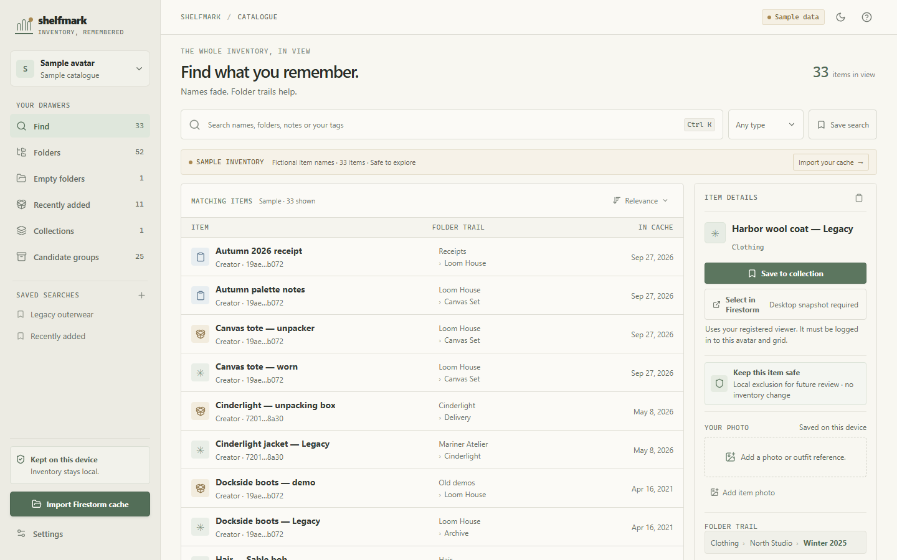

Move items to Trash
With the optional Firestorm Mini patch, move one selected item to Trash on Windows. Firestorm asks first; Shelfmark checks the live location.
Desktop app for Second Life & Firestorm
Find and organise your
Second Life inventory.
Search your Firestorm snapshot, keep notes and tags, and move items to Trash on Windows with an optional patched viewer.
Windows · macOS · Linux No account or activation

What you can do
Work from a local catalogue of your Firestorm inventory, with the details you need to review each item.
With the optional Firestorm Mini patch, move one selected item to Trash on Windows. Firestorm asks first; Shelfmark checks the live location.
Search item names, descriptions, folder paths, and your tags. Browse folders or review groups of possible duplicates and packages.
Add private notes, tags, and reference photos. Save useful searches and group favourite items into collections.
Candidate groups are clues to review. Importing and browsing a snapshot are read-only.
Getting started
Install Shelfmark, choose an avatar snapshot, and build your catalogue on your computer.
Follow the full walkthroughChoose Import Firestorm cache and confirm the matching avatar. Close Firestorm first for the freshest saved cache.
Find an item by name or folder, add your own notes and tags, and save it to a collection.
Use stock Firestorm to check the active avatar, or install the optional Firestorm Mini viewer for confirmed Trash moves.
Kept on your device
Your inventory, notes, tags, and photos are not uploaded to a Shelfmark service. Shelfmark reads the cache you select and never asks for your Second Life password.
Viewer connections run locally. Firestorm Mini is a separate experimental viewer download, not part of the Shelfmark installer. The desktop app contacts GitHub Releases to check for signed updates.
Privacy and local dataGet Shelfmark
Download Shelfmark for Windows, macOS, or Linux. The optional Firestorm Mini viewer is a separate Windows download.
Shelfmark uses personal-use terms. Firestorm Mini and its patch are separate Firestorm-derived components under LGPL-2.1-only.